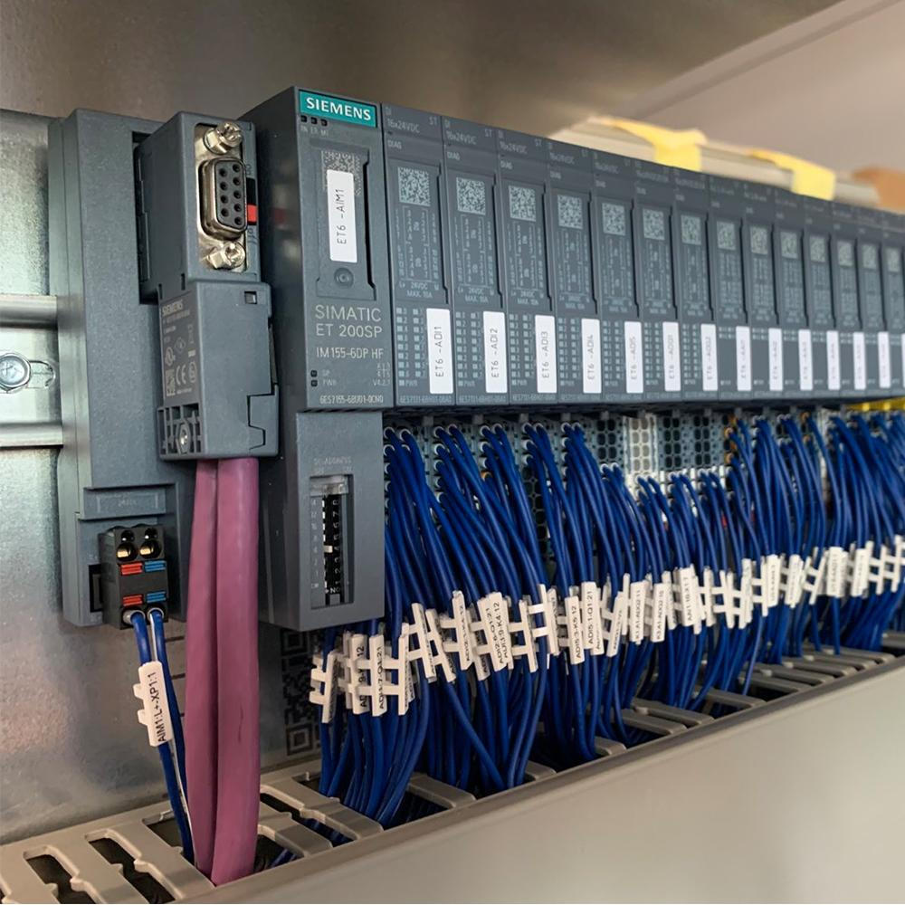
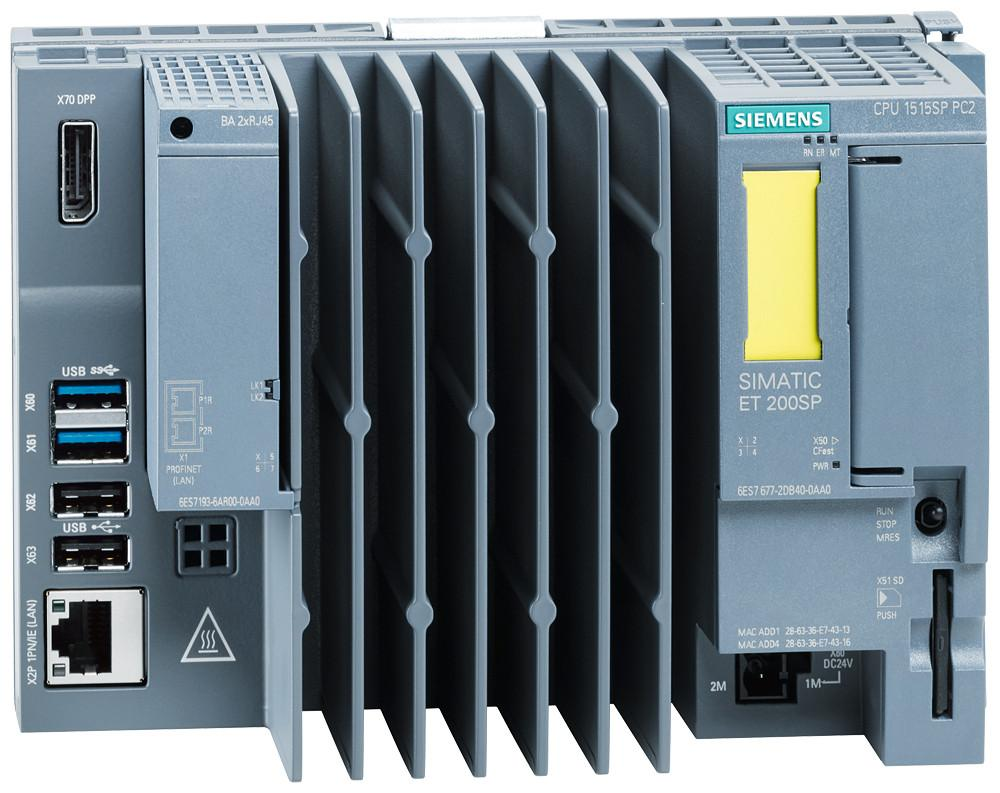

Centralized and distributed control describe how control functions are organized and where control decisions are executed within an industrial automation system.
The key difference is where the control logic resides and how responsibilities are divided among controllers.
- Centralized control: Most of the relevant control logic is executed by one central controller or a central control system.
- Distributed control: Control functions are divided among multiple controllers or control units that manage their respective machines, process areas, or functions.
Neither architecture is automatically better in every situation. The right choice depends on machine complexity, response time, availability requirements, expansion plans, maintenance capability, and cost. Industrial systems, naturally, also enjoy combining both approaches and calling it an architecture.
1. Centralized control
In centralized control, one main controller performs most of the control logic for the equipment or process within its scope.
For example, one PLC may control a conveyor system, multiple pneumatic fixtures, sensors, motors, and several machine stations.
Central PLC
↕
Central I/O System
↕
Sensors and Actuators
↕
Multiple Machines
This is a simplified arrangement. A centralized PLC can also communicate with remote I/O modules distributed around the machine, so physical I/O location alone does not determine whether the control architecture is centralized.
1.1 How centralized control works
- Field sensors provide signals to the controller through its I/O system.
- The controller evaluates the program and determines the required actions.
- Output commands are sent to the relevant field devices.
- Feedback signals return to the controller.
- The controller coordinates the operation according to its programmed logic.
The control decisions are concentrated in the main controller, even if the sensors, actuators, and I/O modules are physically spread across a large area.
1.2 Advantages of centralized control
- Simpler coordination: One controller can manage interactions between several devices and stations.
- Centralized programming: Much of the control logic can be developed and maintained in one project.
- Consistent logic: Shared operating conditions and data can be managed within a common controller program.
- Potentially lower initial complexity: For a small machine, one controller may be simpler and cheaper than several controllers.
1.3 Limitations of centralized control
- Concentrated failure impact: A failure of the main controller can affect many functions that depend on it.
- Growing program complexity: As the machine expands, the program can become harder to understand, test, and maintain.
- Communication and I/O constraints: Large installations may require more remote I/O, network capacity, and careful timing design.
- Expansion challenges: Adding stations can require extensive modifications to the central program and its interfaces.
Centralization does not automatically mean poor reliability. Redundant controllers, redundant power supplies, and suitable fault-tolerant designs can reduce the risk of a single failure stopping the system.
2. Distributed control
In distributed control, control responsibilities are divided among multiple controllers or autonomous control units.
Each controller manages an assigned machine, process area, or group of functions. The controllers exchange information when coordination is required.
Supervisory System
HMI / SCADA
↕
Industrial Network
↙ ↓ ↘
PLC A PLC B PLC C
↕ ↕ ↕
Station A Station B Station C
Devices Devices Devices
For example, a vehicle-body production line might have separate controllers for body positioning, clamping, welding coordination, and conveyor movement. A higher-level system coordinates production across these areas.
The controllers do not necessarily need a higher-level PLC for every interaction. They may communicate directly with one another or use a supervisory system, depending on the design.
2.1 How distributed control works
- Each controller receives signals from its assigned field devices.
- It executes its local control program.
- It controls its assigned equipment.
- It exchanges relevant status and commands with other controllers.
- The supervisory system gathers information from multiple areas for operator monitoring and coordination.
The main advantage is that control responsibilities are separated into manageable sections. A problem in one area may remain limited to that area, provided the architecture and dependencies allow it.
2.2 Advantages of distributed control
- Modularity: Each station or process area can have its own controller and defined responsibilities.
- Scalability: Additional areas can often be added without expanding one central program indefinitely.
- Localized troubleshooting: Maintenance personnel can investigate the controller and devices associated with the affected area.
- Reduced field wiring: Local controllers and remote I/O can reduce long cable runs to a central panel.
- Potentially improved availability: A local controller may continue controlling its own equipment if a supervisory connection fails, depending on the design.
- Independent development: Different machine areas can sometimes be developed, tested, and commissioned separately.
2.3 Limitations of distributed control
- Greater integration effort: Controllers must exchange compatible and correctly interpreted data.
- Network dependencies: Communication failures can disrupt coordination between areas.
- More components to maintain: Multiple controllers introduce additional hardware, firmware, configurations, and diagnostic requirements.
- Troubleshooting across boundaries: A fault may involve one controller, its network, or another controller's logic.
- Configuration consistency: Tag names, data structures, operating modes, and software versions must be managed carefully.
Distributed control does not eliminate common failure points. Shared networks, power supplies, supervisory servers, or common infrastructure can still affect multiple areas.
3. Visual reference: Distributed control system architecture
The following is an openly available architecture diagram published by Yokogawa. It illustrates distributed controllers and equipment with operator monitoring and supervisory functions arranged above them.

Source: Yokogawa, Distributed Control Systems.
Notice the important separation: monitoring can be centralized while control calculations are distributed. The operator may see the entire plant on a common interface even though different controllers execute the actual control functions locally.
4. Centralized versus distributed control
| Comparison | Centralized control | Distributed control |
|---|---|---|
| Control execution | Concentrated in a central controller or control system | Divided among multiple controllers or control units |
| Program organization | One main program or coordinated central project | Multiple local programs or control applications |
| Expansion | May increase central program and hardware demands | Can support modular expansion by area |
| Coordination | Often straightforward within one controller | Requires defined interfaces between controllers |
| Failure impact | A central controller failure can affect many dependent functions | Some failures may remain localized |
| Communication dependence | Depends on the architecture; local control can be less network-dependent | Often relies more heavily on controller-to-controller communication |
| Troubleshooting | Can be concentrated around the main controller | Requires checking local controllers and their interfaces |
| Hardware and engineering | May be simpler for small systems | Can involve more hardware and integration effort |
| Typical application | Small or moderately sized machines | Large machines, modular lines, and multi-area plants |
The comparison describes typical tendencies, not guaranteed outcomes. A poorly designed distributed system can be less reliable than a well-designed centralized one.
5. Distributed control is not the same as distributed I/O
This distinction is particularly important for PLC maintenance.
Distributed I/O means that input and output modules are physically located away from the main controller and communicate with it over a network.
Distributed control means that control execution or decision-making is divided among multiple controllers or autonomous control units.
These are different architectural decisions.

Distributed I/O with centralized control
One main PLC executes the control program. Remote I/O modules near the equipment collect sensor signals and operate output circuits through the industrial network.

Distributed control
Multiple controllers execute their own assigned control logic. They can have local I/O and communicate with each other for station or process coordination.
A system can use both distributed control and distributed I/O. A controller located at each station may operate local I/O while exchanging status with the rest of the production line.
Siemens documents both centralized and distributed automation architectures, including remote peripheral systems and distributed controllers. Siemens SIMATIC automation provides manufacturer examples.
6. The important distinction: centralized supervision versus distributed control
A distributed system does not mean that every operator needs a separate HMI or that the plant has no central control room.
A common arrangement is:
- Local controllers execute control functions.
- A communication network connects the controllers.
- Central HMI or SCADA stations display system-wide information.
- Operators monitor the plant and issue authorized supervisory commands.
- Local controllers continue executing their assigned logic independently where the design permits.
This is one of the defining ideas behind a distributed control system (DCS).
For example, a chemical plant may have separate controllers for temperature, pressure, flow, and other process areas. Operators may view all of these from a central control room, but the individual controllers execute their configured control strategies.
A DCS is therefore not simply a collection of unrelated PLCs. It is an integrated control system with coordinated engineering, communication, operator interfaces, and control functions. Modern PLC-based architectures can also achieve substantial integration, so the distinction is architectural rather than a rigid rule based only on controller brand or count. ABB control systems.
7. Practical example: Automotive robotic production line
Consider three stations:
- Station A positions the vehicle body.
- Station B clamps and welds the body.
- Station C transfers the body to the next operation.
7.1 Centralized design
One central PLC controls the sensors, clamps, conveyor commands, and station coordination for all three stations.
Advantages:
- Shared logic is managed in one main program.
- Coordination within the controller can be straightforward.
- There may be fewer controller projects to manage.
Challenges:
- The central program can become large and complex.
- A central controller fault can affect all dependent stations.
- Adding new stations may require substantial program and I/O changes.
7.2 Distributed design
Each station has its own PLC or local controller.
PLC A: Body Positioning
↕
PLC B: Clamping and Welding Coordination
↕
PLC C: Body Transfer
↕
Supervisory HMI / SCADA
This is a simplified representation of a possible design. In a real line, all controllers may connect through a common industrial network rather than being connected in a single chain.
Advantages:
- Each station has a more clearly defined control scope.
- Local programs can be developed and tested independently.
- A station-level fault may have a limited impact if the other stations do not depend on it to continue operating.
- Additional stations may be integrated through defined communication interfaces.
Challenges:
- The controllers must exchange correct status and command data.
- Network and communication diagnostics become important.
- The engineering team must maintain consistent interfaces and system-wide behaviour.
7.3 What happens when one controller fails?
Suppose PLC B stops communicating.
PLC A may still be able to execute its local program. PLC C may also remain powered and execute its own logic. However, the complete line might stop because the required station-ready or production-coordination information is missing.
This demonstrates a critical principle:
Local control can remain operational even when overall production coordination is unavailable.
Whether the line stops, continues, or enters a controlled state depends on the program, machine dependencies, network architecture, and safety design.
8. Reliability, redundancy, and failure domains
Centralized versus distributed control is closely related to reliability, but the concepts are not interchangeable.
- Reliability: The ability of equipment or a system to perform its required function under specified conditions.
- Availability: The proportion of time a system is capable of performing its required function.
- Redundancy: Additional components or paths intended to preserve functionality when a component fails.
- Failure domain: The portion of a system that can be affected by a particular failure.
Centralized control
A central controller may be a major failure point because multiple functions depend on it. Redundant CPUs, power supplies, networks, and suitable I/O arrangements can reduce this risk.
Distributed control
A local controller failure may affect only its assigned area, but the fault can still propagate through dependencies. A shared network failure, common power failure, or supervisory-system failure can affect multiple areas.
A distributed design is not automatically redundant. Four controllers without backups are still four controllers without backups.
9. Control architecture selection
The decision should be based on the application rather than the assumption that distributed control is always more advanced.
| Design consideration | Centralized may suit | Distributed may suit |
|---|---|---|
| System size | Compact machine with manageable logic | Large machine or multiple production areas |
| Coordination | Tightly integrated functions within one controller | Functions that can be separated into defined modules |
| Physical layout | Equipment located near one control panel | Equipment spread across multiple stations or process areas |
| Expansion | Limited or predictable expansion | Modular expansion or repeated station designs |
| Maintenance | Team prefers one main controller and program | Team can maintain multiple controllers and interfaces |
| Availability | Central controller risk is acceptable or mitigated | Local autonomy and fault containment are important goals |
Other factors include response-time requirements, communication performance, engineering standards, cybersecurity, spare-parts strategy, lifecycle cost, and the skills available to the maintenance team.
A hybrid architecture is common: centralized line coordination, distributed station controllers, remote I/O, and local drive or robot control.
10. Maintenance troubleshooting for centralized and distributed systems
When a machine stops, first identify whether the fault affects one device, one station, multiple stations, or the entire system.
| Observed symptom | Possible area to investigate |
|---|---|
| One sensor fails to update | Sensor, wiring, I/O channel, or tag mapping |
| All signals on one remote I/O rack disappear | Rack power, network connection, adapter, or configuration |
| One station stops while others remain operational | Local controller, station equipment, or local logic |
| Multiple stations lose communication simultaneously | Shared network infrastructure, switch, power, or common communication path |
| HMI loses visibility but local machines continue | Supervisory connection, HMI, server, or data communication |
| Multiple controllers stop responding | Common infrastructure, controller power, network architecture, or another shared dependency |
A useful diagnostic sequence is:
- Determine the scope of the failure.
- Check controller mode, fault status, and diagnostics.
- Check local I/O and remote I/O communication status.
- Verify the relevant controller tags and program conditions.
- Check controller-to-controller communication where applicable.
- Verify physical device conditions and feedback.
- Identify the root cause before resetting or changing logic.
Do not assume that a common symptom proves a common cause. For example, multiple stations stopping may be the intended response to one missing production-ready signal rather than a failure of several PLCs.
11. Interview questions and answers
Q1. What is centralized control?
Centralized control concentrates most control execution within one main controller or central control system.
Q2. What is distributed control?
Distributed control divides control functions among multiple controllers or control units, typically assigned to individual machines, stations, or process areas.
Q3. What is the difference between distributed control and distributed I/O?
Distributed control divides control execution among multiple controllers. Distributed I/O places input and output modules away from the main controller. A system can use either or both.
Q4. Is SCADA centralized or distributed?
SCADA commonly provides centralized monitoring and supervisory interaction across multiple distributed controllers or remote sites. The underlying control functions may be distributed independently of where the SCADA software runs.
Q5. Does a DCS have centralized control?
A DCS commonly distributes control execution among local controllers while centralizing operator supervision, engineering functions, and system-wide visibility. Central supervision does not mean all control calculations occur in one processor.
Q6. What is the main advantage of distributed control?
It allows control functions to be separated into modular areas, which can improve scalability and fault containment when the system is properly designed.
Q7. What is the main risk of centralized control?
A failure of the central controller or its supporting infrastructure may affect many functions that depend on it. Suitable redundancy and design measures can mitigate this risk.
Q8. Can a distributed system continue operating if the supervisory network fails?
Possibly. Local controllers may continue executing their assigned control logic, but the outcome depends on which network failed, the communication dependencies, and the system design.
Q9. What is a hybrid control architecture?
It combines centralized and distributed elements, such as a central PLC coordinating several local PLCs, remote I/O systems, robot controllers, and drives.
Q10. How should maintenance distinguish a local failure from a system-wide failure?
Establish the scope first, then compare local controller diagnostics, I/O status, network health, and inter-controller communication. This helps isolate the fault without unnecessarily disturbing unaffected equipment.
12. Final mental model
Remember these four distinctions:
- Centralized control: Control decisions are concentrated in a central controller or system.
- Distributed control: Control decisions are divided among multiple controllers.
- Distributed I/O: Input and output hardware is located in remote or decentralized locations.
- Centralized supervision: Operators can monitor and supervise many areas from a common interface.
A production line can have distributed controllers, distributed I/O, and centralized SCADA at the same time.
For your maintenance work, the most useful question is: Where is the control function executed, which other components depend on it, and how far can its failure affect the system?
The next topic in your study sequence is 12_Machine_Cycle: Machine Cycle.